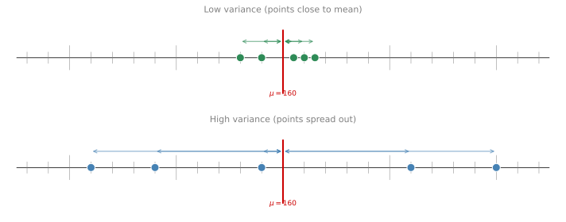
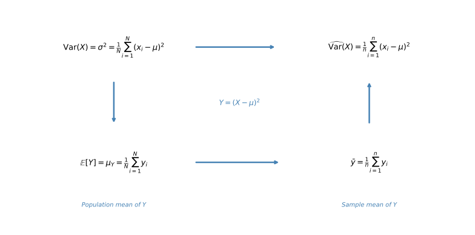
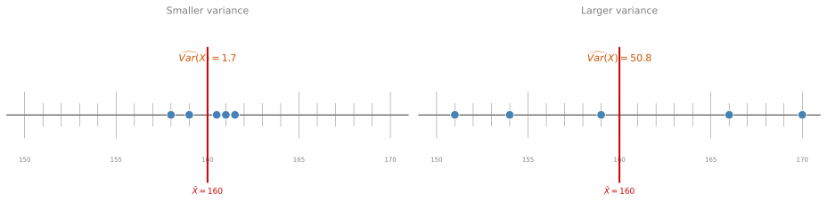

Sample Variance
statistics
Variance measures how spread out your data is. It is related to how far data points are from their mean. In the probability section, you learned the…
Variance measures how spread out your data is. It is related to how far data points are from their mean. In the probability section, you learned the population variance formula. But in statistics, you usually do not have access to the entire population. You only have a sample. So the question becomes: how can you estimate the population variance from a sample?
Visualizing Spread
Consider two datasets, each with 5 data points and both with a mean of 160 cm. One has points clustered near the mean (low variance), and the other has points spread far from the mean (high variance).
The top dataset has a smaller variance (all points are close to the mean), while the bottom dataset has a larger variance (points are spread out).
Population Variance
The population variance, denoted \(\text{Var}(X) = \sigma^2\) (sigma squared), measures the average squared deviation from the population mean:
\[ \text{Var}(X) = \sigma^2 = \frac{1}{N} \sum_{i=1}^{N} (x_i - \mu)^2 \]
This formula requires two things you typically do not have when working with samples:
- The population mean \(\mu\)
- The population size \(N\)
Deriving Sample Variance
Since variance is the expected value (mean) of the squared deviations, you can think of it as just another population mean. The key insight is to define a new variable \(Y = (X - \mu)^2\) and recognize that the variance is simply the mean of \(Y\). Then you can apply the same sample-mean approach you already know.

Here is what the diagram shows step by step:
- Top-left: The population variance is \(\sigma^2 = \frac{1}{N}\sum(x_i - \mu)^2\)
- Down: Define \(Y = (X - \mu)^2\). Then \(\sigma^2\) is just the population mean of \(Y\): \(\mathbb{E}[Y] = \frac{1}{N}\sum y_i\)
- Right: Estimate the population mean of \(Y\) with its sample mean: \(\bar{y} = \frac{1}{n}\sum y_i\)
- Up: Substitute \(y_i = (x_i - \mu)^2\) back in to get \(\widehat{\text{Var}}(X) = \frac{1}{n}\sum(x_i - \mu)^2\). The hat (^) on top of Var indicates that this is an estimate of the true variance, not the exact population variance itself.
This gives us an estimate, but there is still a problem: \(\mu\) is unknown. The natural move is to replace \(\mu\) with the sample mean \(\bar{X}\):
\[ \widehat{\text{Var}}(X) = \frac{1}{n} \sum_{i=1}^{n} (x_i - \color{#CC5500}{\bar{X}}\color{black}{)^2} \]
Notice the \(\color{#CC5500}{\bar{X}}\) where \(\mu\) used to be. We are “cheating” by using a value computed from the same sample. This seems intuitive, but does it actually work?
Trying It Out
Consider two datasets, each with \(n = 5\) and \(\bar{X} = 160\):
- Dataset 1 (smaller variance): 158, 159, 160.5, 161, 161.5
- Dataset 2 (larger variance): 151, 154, 159, 166, 170

Using \(\widehat{\text{Var}}(X)\) (dividing by \(n = 5\)):
Dataset 1 (smaller variance):
\[ \widehat{\text{Var}}(X) = \frac{1}{5}\left[(158-160)^2 + (159-160)^2 + (160.5-160)^2 + (161-160)^2 + (161.5-160)^2\right] = 1.7 \]
Dataset 2 (larger variance): the points are about 7 away from the sample mean on average, so you would expect the sample variance to be about \(7^2 \approx 49\). The actual calculation gives:
\[ \widehat{\text{Var}}(X) = \frac{1}{5}\left[(151-160)^2 + (154-160)^2 + (159-160)^2 + (166-160)^2 + (170-160)^2\right] = 50.8 \]
These numbers make sense intuitively. But there is a subtle problem: this formula is biased. It slightly underestimates the true population variance.
Bessel’s Correction: Why \(n-1\)?
The bias comes from using \(\bar{X}\) instead of \(\mu\). To see this concretely, consider a simple game.
Hat Game Example
You have three sheets of paper with the numbers 1, 2, and 3. You put them in a hat and randomly draw one. The population is \(\{1, 2, 3\}\):
- Population mean: \(\mu = \frac{1+2+3}{3} = 2\)
- Population variance: \(\sigma^2 = \frac{(1-2)^2 + (0)^2 + (1)^2}{3} = \frac{2}{3} \approx 0.667\)
Now suppose you play twice (with replacement), giving samples of size \(n = 2\). Here are all 9 possible outcomes:
Here are all 9 possible outcomes of playing the game twice, with the sample variance calculated both ways:
| Sample | \(\bar{X}\) | \(\widehat{\text{Var}}(X) = \frac{1}{n}\sum(x_i - \bar{X})^2\) | \(s^2 = \frac{1}{n-1}\sum(x_i - \bar{X})^2\) |
|---|---|---|---|
| (1, 1) | 1.0 | 0.00 | 0.00 |
| (1, 2) | 1.5 | 0.25 | 0.50 |
| (1, 3) | 2.0 | 1.00 | 2.00 |
| (2, 1) | 1.5 | 0.25 | 0.50 |
| (2, 2) | 2.0 | 0.00 | 0.00 |
| (2, 3) | 2.5 | 0.25 | 0.50 |
| (3, 1) | 2.0 | 1.00 | 2.00 |
| (3, 2) | 2.5 | 0.25 | 0.50 |
| (3, 3) | 3.0 | 0.00 | 0.00 |
| Average: | 0.333 (Underestimates!) | 0.667 (Correct!) |
Population variance \(\sigma^2 = 2/3 \approx 0.667\)
When dividing by \(n\), the average of all possible sample variances is \(\frac{1}{3}\), which underestimates the true population variance of \(\frac{2}{3}\).
When dividing by \(n - 1\), the average comes out to exactly \(\frac{2}{3}\), matching the population variance perfectly.
Unbiased Sample Variance (\(s^2\))
The corrected formula, called Bessel’s correction, divides by \(n - 1\) instead of \(n\):
\[ s^2 = \frac{1}{n-1} \sum_{i=1}^{n} (x_i - \bar{X})^2 \]
This is the unbiased sample variance and is denoted \(s^2\). It corrects for the bias introduced by using \(\bar{X}\) (which is calculated from the same sample) instead of the true \(\mu\).
That said, as \(n\) gets bigger, the difference between dividing by \(n\) and \(n - 1\) matters less. If your sample size is 3, it is the difference between dividing by 3 or 2, which is large. If your sample size is 1,000, it is the difference between dividing by 1,000 or 999, which is tiny. From a practitioner’s point of view, if the choice between \(n\) and \(n - 1\) significantly changes your estimated variance, you likely have a bigger problem: your sample size is too small to draw strong conclusions.
Going back to our two earlier datasets, let us now replace \(\frac{1}{n}\) with \(\frac{1}{n-1}\) to get the \(s^2\) estimates:
Dataset 1 (smaller variance):
\[ s^2 = \frac{1}{5-1}\left[(158-160)^2 + (159-160)^2 + (160.5-160)^2 + (161-160)^2 + (161.5-160)^2\right] = 2.125 \]
Dataset 2 (larger variance):
\[ s^2 = \frac{1}{5-1}\left[(151-160)^2 + (154-160)^2 + (159-160)^2 + (166-160)^2 + (170-160)^2\right] = 63.5 \]
In both cases, the estimate increased slightly because you are now dividing by 4 instead of 5. The \(s^2\) values (2.125 and 63.5) are the unbiased estimates you would report in practice.
Review Questions
1. Why does dividing by \(n\) produce a biased estimate of variance?
TipAnswer
When you replace the population mean \(\mu\) with the sample mean \(\bar{X}\) in the variance formula, the sample mean is computed from the same data points. The data points are, on average, closer to their own sample mean than to the true population mean. This causes the sum of squared deviations to be systematically smaller than it should be, leading to underestimation.
2. In the hat game example, what is the population variance and what average do you get when using \(n\) vs \(n-1\)?
TipAnswer
The population variance is \(\sigma^2 = 2/3 \approx 0.667\). Dividing by \(n = 2\) gives an average estimated variance of \(1/3 \approx 0.333\) (underestimates by half). Dividing by \(n - 1 = 1\) gives an average of \(2/3 \approx 0.667\), which matches the population variance exactly.
3. Does the difference between \(n\) and \(n-1\) matter for large samples?
TipAnswer
As \(n\) gets larger, the difference between dividing by \(n\) and \(n-1\) becomes negligible. For \(n = 1000\), it is the difference between dividing by 1000 and 999. From a practical standpoint, if the choice between \(n\) and \(n-1\) significantly changes your variance estimate, your sample size is probably too small to draw strong conclusions.
When to Use Which Formula
To summarize, there are two scenarios:
Population Variance Formula (you have the entire population):
\[ \text{Var}(X) = \sigma^2 = \frac{1}{N} \sum (x_i - \mu)^2 \]
Sample Variance Formulas (you only have a sample):
The unbiased estimate (most common in practice):
\[ s^2 = \frac{\sum_{i=1}^{n}(x_i - \bar{X})^2}{n - 1} \]
The biased estimate (used in maximum likelihood estimation):
\[ \hat{\sigma}^2 = \widehat{\text{Var}}(X) = \frac{\sum_{i=1}^{n}(x_i - \bar{X})^2}{n} \]
Some accepted statistical techniques use \(n\) in the denominator. For example, maximum likelihood estimation (which you will see in a coming lesson) technically divides by \(n\). However, the \(s^2\) estimate where you divide by \(n - 1\) is the most common and the one you will see most frequently in this course and in practice.
| Formula | Notation | Denominator | When to use |
|---|---|---|---|
| Population variance | \(\sigma^2\) | \(N\) | You have the entire population |
| Biased sample variance | \(\widehat{\text{Var}}(X)\) | \(n\) | Maximum likelihood estimation (MLE) |
| Unbiased sample variance | \(s^2\) | \(n - 1\) | Most common in practice |
Review Questions
4. What is Bessel’s correction?
TipAnswer
Bessel’s correction is dividing by \(n - 1\) instead of \(n\) in the sample variance formula. It corrects the downward bias that arises from estimating the population mean with the sample mean computed from the same data.
5. A dataset has \(n = 5\) points: 151, 154, 159, 166, 170 with \(\bar{X} = 160\). Calculate \(s^2\).
TipAnswer
\(s^2 = \frac{1}{5-1}[(151-160)^2 + (154-160)^2 + (159-160)^2 + (166-160)^2 + (170-160)^2]\)
\(= \frac{1}{4}[81 + 36 + 1 + 36 + 100] = \frac{254}{4} = 63.5\)
Note: this is larger than \(\widehat{\text{Var}}(X) = 50.8\) (dividing by \(n = 5\)) because Bessel’s correction adjusts upward.
6. Dataset 1 has \(\widehat{\text{Var}}(X) = 1.7\) and Dataset 2 has \(\widehat{\text{Var}}(X) = 50.8\). What are the \(s^2\) values (dividing by \(n-1\) instead)?
TipAnswer
Dataset 1: \(s^2 = \frac{n}{n-1} \times 1.7 = \frac{5}{4} \times 1.7 = 2.125\)
Dataset 2: \(s^2 = \frac{5}{4} \times 50.8 = 63.5\)
In both cases, the estimate increases slightly because you are dividing by 4 instead of 5.
7. Let \(S = \{5, 2, 7, 10\}\) be a random sample. Calculate the population variance for this sample set.
- 2.9
- 6
- 8.5
- 34
TipAnswer
c. Mean \(= \frac{5+2+7+10}{4} = 6\). Population variance (dividing by \(N = 4\)):
\(\sigma^2 = \frac{(5-6)^2 + (2-6)^2 + (7-6)^2 + (10-6)^2}{4} = \frac{1 + 16 + 1 + 16}{4} = \frac{34}{4} = 8.5\)
Summary
| Symbol | Name | Formula |
|---|---|---|
| \(\sigma^2\) | Population variance | \(\frac{1}{N}\sum(x_i - \mu)^2\) |
| \(\widehat{\text{Var}}(X)\) | Biased sample variance | \(\frac{1}{n}\sum(x_i - \bar{X})^2\) |
| \(s^2\) | Unbiased sample variance | \(\frac{1}{n-1}\sum(x_i - \bar{X})^2\) |
Key takeaways:
- The population variance uses \(\mu\) and divides by \(N\).
- When estimating variance from a sample, replacing \(\mu\) with \(\bar{X}\) introduces a downward bias.
- Dividing by \(n - 1\) (Bessel’s correction) produces an unbiased estimate and is the standard approach.
- For large \(n\), the difference between dividing by \(n\) and \(n - 1\) is negligible.